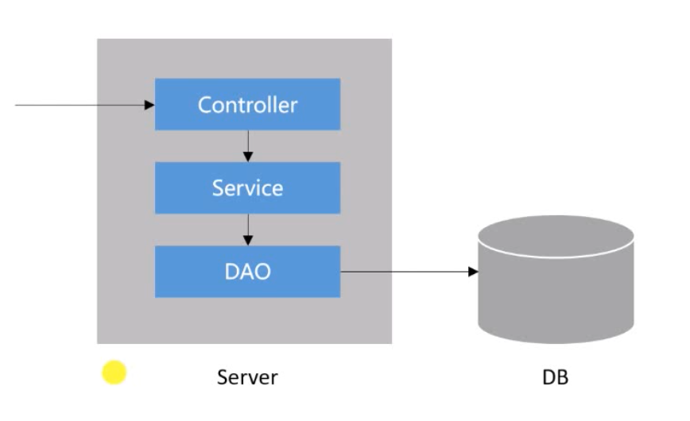

前言
本篇文章主要介绍了表现层、业务层、数据访问层的整体开发流程、MVC和分页功能的运行逻辑
一次请求的过程
- 浏览器发送请求给服务器视表现层(MVC)
- Controller在处理请求的时候会访问业务层
业务组件Service处理具体业务 - 业务组件处理的时候会访问数据访问组件
- 数据访问组件(Mapper)通过xml映射访问数据库

因为上面依赖于下面，所以开发从下往上开发的顺序比较好开发第一步:DB
先在数据库添加”discuss_post”表：1
2
3
4
5
6
7
8
9
10
11
12
13CREATE TABLE `discuss_post` (
`id` int NOT NULL AUTO_INCREMENT,
`user_id` varchar(45) DEFAULT NULL,
`title` varchar(100) DEFAULT NULL,
`content` text,
`type` int DEFAULT NULL COMMENT '0-普通; 1-置顶;',
`status` int DEFAULT NULL COMMENT '0-正常; 1-精华; 2-拉黑;',
`create_time` timestamp NULL DEFAULT NULL,
`comment_count` int DEFAULT NULL,
`score` double DEFAULT NULL,
PRIMARY KEY (`id`),
KEY `index_user_id` (`user_id`)
) ENGINE=InnoDB AUTO_INCREMENT=281 DEFAULT CHARSET=utf8
给表里添加数据
开发第二步:DAO
开发DAO层步骤：
entity—>Mapper–>Mapper映射器
也就是先写与数据相对应的对象，再写Mapper接口，说明与实体对应的方法， 然后映射器在XML文件里用SQL语句实现方法
entity
1 | public class DIscussPost { |
Mapper
实现查询帖子页面和显示页数的方法1
2
3
4
5
6
7
8
9
10
11
12
13
14
15@Mapper
public interface DiscussPostMapper {
//查询帖子页面方法
//实现查询功能，查询返回的是一页，所以要是一个List，多条数据
//为什么传入userId是因为，以后要开发用户主页，显示用户发过的帖子
//传入offset（这一页起始行号）和limit（一页最多多少数据）实现分页
List<DiscussPost> selectDiscussPosts(int userId,int offset, int limit);
//计算帖子总数
//为了显示页数，要查到一共多少帖子，然后除以每页显示的帖子数
//@Param用于给参数取别名
//注意：如果只有一个参数并且sql里要动态地(比如<if>)使用这个参数时，必须加上Param
int selectDiscussPostRows(@Param(“userId”) int userId);
}
Mapper映射器
xml头部和以前一样，现在只用用sql语句实现Mapper接口里的两个方法即可：
第一个方法:
1
2
3
4
5
6
7
8
9
10
11
12
13
14<!— List只用声明<>里面的类型即可—>
<!— XML里面if表示 如果test是true就拼接里面的语句，如果不是就不显示 —>
<!— 这里面的if是指，如果userId=0说明要查的不是用户主页，那就把帖子全部查询
如果userId!=0,说明查的是用户主页，那就拼接上条件，帖子的用户要是userId发的—>
<select id=“selectDiscussPosts” resultType=“DiscussPost">
select <include refid="selectFields"></include>
from discuss_post
where status!=2
<if test="userId!=0">
and user_id = #{userId}
</if>
order by type desc, create_time desc
limit #{offset}, #{limit}
</select>第二个方法
1
2
3
4
5
6
7
8
9<select id=“selectDiscussPostRows” resultType=“Int”>
select *count*(id)
from discuss_post
where status!=2
<if test=“userId!=0”>
and user_id = #{userId}
</if>
</select>
注意：XML不报错，所以每个单词的拼写和格式都要注意。否则bug要找很久
开发第三步:Service
- 即使业务简单也要分层，不要直接从Cotroller调用DAO
- 先写DiscussPostService
- 在UserService里面去通过userId找到用户信息，在用户主页显示
1
2
3
4
5
6
7
8
9
10
11
12
13
14@Service
public class DiscussPostService {
@Autowired
private DiscussPostMapper discussPostMapper;
public List<DiscussPost> findDiscussPosts(int userId, int offset, int limit){
return discussPostMapper.selectDiscussPosts(userId, offset, limit);
}
public int findDiscussPostRows(int userId){
return discussPostMapper.selectDiscussPostRows(userId);
}
}
1 | @Service |
开发第四步:Controller
准备静态资源
- 本次项目主要学习后端技术，所以前端页面暂时用模板，以后学前端的话再更新
- 包括css、img、js、index.html、mail、site文件，在项目代码的static和templates里
写Cotroller
- 给model里添加一个包含用户帖子和用户信息的List
1
2
3
4
5
6
7
8
9
10
11
12
13
14
15
16
17
18
19
20
21
22
23
24
25
26
27
28
29
30@Controller
public class HomeController {
@Autowired
private DiscussPostService discussPostService;
@Autowired
private UserService userService;
@RequestMapping(path = “/index”, method = RequestMethod.*GET*)
public String getIndexPage(Model model){
List<DiscussPost> list = discussPostService.findDiscussPosts(0,0,10);
//写一个包含用户帖子和用户信息的List，用List嵌套Map实现
List<Map<String, Object>> discussPosts = new ArrayList<>();
for (DiscussPost post:list) {
//每取一个帖子信息，就创建一个Map，并把这个Map存在List<Map<String, Object>>里面
Map<String, Object> map = new HashMap<>();
map.put("post",post);
//每个Post都是一个DiscussPost对象,获得的外键UserId，就是User里的主键Id
User user = userService.finndUserById(post.getUserId());
map.put(“user”,user);
discussPosts.add(map);
}
model.addAttribute("discussPosts", discussPosts);
return "/index";
}
}
开发第五步:模板引擎
- 在index.html里面对静态网页进行修改，用thymeleaf把网页变成动态的。
- 由于是首页，所以需要改的地方有
- 遍历List<Map<String, Object>> discussPosts里的帖子，展示在首页
- 用户的头像、用户名、帖子发布时间都改为动态的
- 判断帖子是否为精华帖和是否置顶
1
2
3
4
5
6
7
8
9
10
11
12
13
14
15
16
17
18
19
20
21
22
23
24
25
26
27<!-- 帖子列表 -->
<ul class="list-unstyled">
<li class="media pb-3 pt-3 mb-3 border-bottom" th:each="map:${discussPosts}">
<a href="site/profile.html">
<!-- 动态获取头像,相当map.get("user").getHeaderUrl()-->
<img th:src="${map.user.headerUrl}" class="mr-4 rounded-circle" alt="用户头像" style="width:50px;height:50px;">
</a>
<div class="media-body">
<h6 class=“mt-0 mb-3”>
<!— 动态获取标题 —>
<a href=“#"”th:utext = "$“map.post.title}">”么是Ioc？</a>
<!— 判断是否为精华帖和是否置顶 —>
<span class="b“dge badge-secondary bg-primary" ”h:if="$“map.post.type==1}">”顶</span>
<span class="badge badge-secondary bg-danger" th:if="${map.post.status==1}">精华</span>
</h6>
<div class="text-muted font-size-12">
<!-- 动态获取发帖时间并用dates工具格式化 -->
<u class="mr-3" th:utext="${map.user.username}">特朗普</u> 发布于 <b th:text= "${#dates.format(map.post.createTime,'yyyy-MM-dd HH:mm:ss')}"> 2020-06-15 15:32:18</b>
<ul class="d-inline float-right">
<li class="d-inline ml-2">赞 11</li>
<li class="d-inline ml-2">|</li>
<li class="d-inline ml-2">回帖 7</li>
</ul>
</div>
</div>
</li>
</ul>
运行逻辑
- 前面的步骤如果都正确，那么进入8080端口输入访问路径就会得到正确的页面
- 运行逻辑是：
Controller接收浏览器请求—>Service层调用—>DAO层调用DB获取数据
—->DAO层获取数据后处理Mapper方法—>Service通过Mapper处理事务
—->Controller层通过Service传给Model数据—>Model和模板文件生成动态网页返回给浏览器 - MVC的运行逻辑
添加分页功能
添加page实体
分页功能不牵扯业务和取数据，所以只用写一个page实体，在MVC里面传输数据即可。
注意：有些变量不用定义（可能是只读的属性不用定义？暂时没找到答案），只要写了getter方法，就可以在模板文件里直接取到1
2
3
4
5
6
7
8
9
10
11
12
13
14
15
16
17
18
19
20
21
22
23
24
25
26
27
28
29
30
31
32
33
34
35
36
37
38
39
40
41
42
43
44
45
46
47
48
49
50
51
52
53
54
55
56
57
58
59
60
61
62
63
64
65
66
67
68
69
70
71
72
73
74
75
76
77
78
79
80
81
82
83
84
85
86
87
88//封装分页相关信息，利用这个对象让服务器接收页面传入的信息
public class Page {
//当前页码
private int current = 1;
//显示上限
private int limit = 10;
//查数据总数(用来计算总页数)
private int rows;
//查询路径（要显示的页面的路径）
private String path;
/**
* setter getter方法
*/
public int getCurrent() {
return current;
}
public void setCurrent(int current) {
if(current >= 1 )
this.current = current;
}
public int getLimit() {
return limit;
}
public void setLimit(int limit) {
if (limit >= 1 && limit <= 100) {
this.limit = limit;
}
}
public int getRows() {
return rows;
}
public void setRows(int rows) {
if (rows >= 0)
this.rows = rows;
}
public String getPath() {
return path;
}
public void setPath(String path) {
this.path = path;
}
//获取当前页起始行，因为selectDiscussPosts方法中给数据库传的是当前页起始行
public int getOffset(){
return (current-1)*limit;
}
/**
* 返回总页数
* 不用定义变量，只要写了getter方法，就可以在模板文件里直接取到
*/
public int getTotal() {
if (rows % limit == 0){
return rows / limit;
}else {
return rows / limit +1;
}
}
/**
* 返回显示的页码范围（当前页的附近页）,From起始，To结束
*/
public int getFrom(){
int from = current - 2;
return from < 1 ? 1 : from;
}
public int getTo(){
int to = current + 2;
return to > getTotal() ? getTotal() : to;
}
}
更改Controller
1 | /** |
模板文件里分页部分
1 | <!— 分页 —> |